유기농업기사 (2018-03-04 기출문제)
1과목: 재배원론
1. 토양 통기의 촉진책으로 틀린 것은?
- 배수 촉진
- 토양 입단 조성
- 식질토를 이용한 객토
- 심경
(정답률: 66%)

2. 고온이 오래 지속될 때 식물체 내에서 일어나는 현상은?
- 당의 증가
- 증산작용의 저하
- 질소대사의 이상
- 유기물의 증가
(정답률: 54%)
3. 내염성 정도가 강한 작물로만 짝지어진 것은?
- 완두, 샐러리
- 배, 살구
- 고구마, 감자
- 유채, 양배추
(정답률: 77%)
4. 세포막 중 중간막의 주성분으로, 잎에 많이 존재하며 체 내의 이동이 어려운 것은?
- 질소
- 칼슘
- 마그네슘
- 인
(정답률: 62%)
5. 이랑을 세우고 낮은 골에 파종하는 방식은?
- 휴립휴파법
- 이랑재배
- 평휴법
- 휴립구파법
(정답률: 67%)
6. 광합성 연구에 활용되는 방사선 동위 원소는?
- 14C
- 32P
- 42K
- 24Na
(정답률: 71%)
7. 추파성 맥류의 상적발육설을 주장한 사람은?
- 다윈
- 우창춘
- 바빌로프
- 리센코
(정답률: 68%)
8. 변온이 작물 생육에 미치는 영향이 아닌 것은?
- 발아촉진
- 동화물질의 축적
- 덩이뿌리의 발달
- 출수 및 개화의 지연
(정답률: 58%)
9. 군락의 수광 대세가 좋아지고 밀식 적응성이 큰 콩의 초형이 아닌 것은?
- 꼬투리가 원줄기에 적게 달린 것
- 키가 크고 도복이 안 되는 것
- 가지를 적게 치고 마디가 짧은 것
- 잎이 작고 가는 것
(정답률: 60%)
10. 교잡에 의한 작물개량의 가능성을 최초로 제시한 사람은?
- Camerarius
- Koerlreuter
- Mcndel
- Johannsen
(정답률: 55%)
11. 좁은 범위의 일장에서만 화성이 유도 촉진되며 2개의 한계일장을 가진 식물은?
- 장일식물
- 중일식물
- 장단일식물
- 정일식물
(정답률: 64%)
12. 비료의 엽면흡수에 영향을 미치는 요인 중 맞는 것은?
- 잎의 이면보다 표피에서 더 잘 흡수된다.
- 잎의 호흡작용이 왕성 할 때에 잘 흡수된다.
- 살포액의 pH는 알칼리인 것이 흡수가 잘된다.
- 엽면시비는 낮보다는 밤에 실시하는 것이 좋다.
(정답률: 66%)
13. 휴면연장과 발아억제를 위한 방법으로 틀린 것은?
- 애스렐 처리
- MH 수용액 처리
- 저온저장
- 감마선 조사
(정답률: 45%)
14. 작물체 내에서의 생리적 또는 형태적인ㆍ균형이나 비율이 작물생육의 지표로 사용되는 것과 거리가 가장 먼 것은?
- C/N 율
- T/R 율
- G/D 균형
- 광합성-호흡
(정답률: 62%)
15. 다음 중 무배유 종자로만 짝지어진 것은?
- 벼, 밀, 옥수수
- 벼, 콩, 팥
- 콩, 팥. 완두
- 옥수수, 밀, 귀리
(정답률: 77%)
16. 화성유도시 저온 장일이 필요한 식물의 저온이나 장일을 대신하는 가장 효과적인 식물호르몬은?
- 에틸렌
- 지베렐린
- 시토키닌
- ABA
(정답률: 64%)
17. 다음 중 육묘의 장점으로 틀린 것은?
- 중수 도모
- 종자 소비량 증대
- 조기수확 가능
- 토지 이용도 증대
(정답률: 71%)
18. 침수에 의한 피해가 가장 큰 벼의 생육단계는?
- 분얼성기
- 최고분얼기
- 수잉기
- 등숙기
(정답률: 62%)
19. 다음 중 동상해 대책으로 틀린 것은?
- 방풍시설 설치
- 파종량 경감
- 토질개선
- 품종선정
(정답률: 76%)
20. 파종 양식 중 뿌림골을 만들고 그곳에 줄지어 종자를 뿌리는 방법은?
- 산파
- 점파
- 조파
- 적파
(정답률: 76%)
2과목: 토양비옥도 및 관리
21. 토양이 건조하여 딱딱하게 굳어지는 성질을 무엇이라 하는가?
- 이쇄성
- 소성
- 수화성
- 강성
(정답률: 68%)
22. 강우에 의하여 비산된 토양이 토양 표면을 따라 얇고 일정하게 침식되는 것은?
- 해안침식
- 협곡침식
- 세류침식
- 면상침식
(정답률: 68%)
23. 토양오염원에서 비점오염원에 해당하는 것은?
- 폐기물매립지
- 대단위 가축사육장
- 산성비
- 송유관
(정답률: 85%)
24. 토양조사의 주요 목적이 아닌 것은?
- 퇴비 가격의 산정
- 합리적인 토지 이용
- 적합한 재배 작물 선정
- 토지 생산성 관리
(정답률: 86%)
25. 토괴 내 작은 공극으로 크기는 0.002~0.03mm 이며, 식물이 흡수라는 물을 보유하고, 세균이 자라는 공간은?
- 대공극
- 중곡극
- 소공극
- 극소공극
(정답률: 69%)
26. 토양공극 내의 상대습도를 측정하는 방법은?
- constant volume 법
- psychrometer 법
- chaedakov 법
- 빙점간하법
(정답률: 74%)
27. 다음 식물군 중 일반적으로 m2당 개체수가 가장 적은 것은?
- 세균
- 조류
- 방선균
- 사상균
(정답률: 61%)
28. 다음 중 양이온교환용량이 가장 높은 것은?
- vermiculite
- sesquioxides
- kaolinite
- hydrous mica
(정답률: 63%)
29. 화성암의 평균조성비에서 함량이 많은 순서대로 나열한 것은?
- Al2O3＞Ca＞SiO2＞Fe2O3
- Ca＞Fe2O3＞Al2O3＞SiO2
- Fe2O3＞SiO2＞Ca＞Al2O3
- SiO2＞Al2O3＞Fe2O3＞Ca
(정답률: 70%)
30. 토양생성인자에 해당하지 않는 것은?
- 모재
- 토성
- 기후
- 시간
(정답률: 70%)
31. 다음 중 풍화내성이 가장 강한 것은?
- 각섬석
- 석영
- 휘석
- 감람석
(정답률: 78%)
32. 화성암을 구분할 때 중성암에 해당하는 것은?
- 화강암
- 석영반암
- 섬록암
- 유문암
(정답률: 63%)
33. ()에 알맞은 내용은?
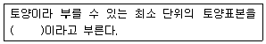
- 이쇄성
- 미사
- 페돈
- 피복
(정답률: 71%)
34. 공생질소 고정균에 해당하는 것은?
- Azotobacter
- Clostridium
- Rhizobium
- Derxia
(정답률: 73%)
35. 다음 설명에 해당하는 것은?
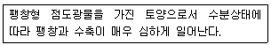
- ultisol
- spodosol
- entisol
- vertisol
(정답률: 53%)
36. ()안에 알맞은 것은?
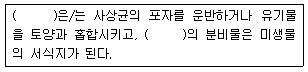
- 선충
- 조류
- 내생균근
- 진드기
(정답률: 58%)
37. 다음 중 토양오염우려기준(단위:mg/kg)이 가장 높은 것은?
- 카드뮴
- 아연
- 6가 크롬
- 수은
(정답률: 45%)
38. 다음 중 토양색을 결정하는 주요인자로 거리가 가장 먼 것은?
- 철
- 규소
- 망간
- 유기물
(정답률: 44%)
39. 다음에서 설명하는 것은?
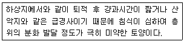
- 반숙토
- 미숙토
- 성숙토
- 과숙토
(정답률: 86%)
40. 다음 미량원소 중 토양반응이 알칼리쪽으로 기울 때 유효도가 높아지는 것은?
- Mo
- Fe
- Zn
- Co
(정답률: 74%)
3과목: 유기농업개론
41. 다음 중 고온장해에 대한 내용으로 틀린 것은?
- 유기물의 과잉소모
- 증산억제
- 질소대사의 이상
- 철분의 침전
(정답률: 57%)
42. 동상해의 재배적 대책으로 틀린 것은?
- 채소는 보온재배를 한다.
- 맥류의 경우 이랑을 없애 뿌림골을 낮게하며, 개화시기를 앞당긴다.
- 한지(寒地)에서 맥류의 파종량을 늘린다.
- 맥류의 경우 칼리질 비효를 증시하고, 퇴비를 종자 위에 준다.
(정답률: 71%)
43. 수경재배 시 고형배지경이면서, 유지배지경에 해당하는 것은?
- 담액수경
- 분무경
- 훈탄경
- 모세관수경
(정답률: 61%)
44. 파, 맥류에서 실시되며, 골에 줄지어 이식하는 방법은?
- 점식
- 혈식
- 조식
- 난식
(정답률: 73%)
45. 친환경관련법상 유기축산물의 축사조건에 대한 내용으로 틀린 것은?
- 건축물을 적절한 단열ㆍ환기시설을 갖출 것
- 음수의 접근이 용이할 것
- 충분한 자연환기와 햇빛이 제공될 수 있을 것
- 가축의 영양 상태를 조절하기 위해 사료의 접근거리를 멀리 할 것
(정답률: 85%)
46. 친환경관련법상 인증기준의 세부사항에서 유기 축산물의 사료 및 영양관리에 대한 내용이다. ()에 알맞은 것은?
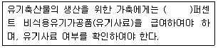
- 100
- 90
- 80
- 70
(정답률: 80%)
47. 플라스틱 파이프나 튜브에 미세한 구멍을 뚫거나 그것에 연결된 가느다란 관의 선단부분에 노즐이나 미세한 수분배출구를 만들어 물이 방울져 소량씩 스며 나오도록 하여 관수하는 방법은?
- 점적관수
- 살수관수
- 지중관수
- 저면급수
(정답률: 79%)
48. 다음 중 지력을 토대로 자연의 물질순환원리에 따르는 농업은?
- 생태농업
- 자연농업
- 저투입 지속적 농업
- 정밀농업
(정답률: 83%)
49. 다음에서 설명하는 것은?
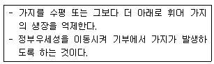
- 적심
- 적엽
- 휘기
- 제얼
(정답률: 75%)
50. 작물의 재배에 적합한 재배적지 토성이 “사양토~식양토”에 해당하는 것은?
- 알팔파
- 티머시
- 밀
- 옥수수
(정답률: 62%)
51. “포장군락의 단위면적당 동화능력”의 표시방법으로 옳은 것은?
- 총엽면적 × 수광능률 × 평균동화능력
- 총엽면적 × 수광능률 + 평균동화능력
- 총엽면적 + 수광능률 ÷ 평균동화능력
- 총엽면적 - 수광능률 × 평균동화능력
(정답률: 77%)
52. F2~F4세대에는 매세대 모든 개체로부터 1립씩 채종하여 집단재배를 하고 F4 각 개체별로 F5 계통재배하는 것은?
- 여교배육종
- 1개체 1계통 육종
- 집단육종
- 계통육종
(정답률: 82%)
53. 다음에서 설명하는 것은?
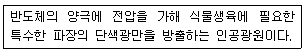
- 발광다이오드
- 메탈할라이드등
- 형광등
- 고압나트륨등
(정답률: 65%)
54. 다음에서 설명하는 것은?
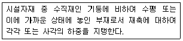
- 토대
- 보
- 샛기둥
- 측창
(정답률: 60%)
55. 고립상태일 때 광포화점이 80~100%에 해당하는 것은?
- 콩
- 감자
- 벼
- 옥수수
(정답률: 72%)
56. 다음 중 3년생 가지에 결실하는 것은?
- 사과
- 감
- 밤
- 포도
(정답률: 80%)
57. 다음 중 C3작물에 해당하는 것은?
- 밀
- 옥수수
- 기장
- 명아주
(정답률: 67%)
58. 종자 발아과정으로 옳은 것은?
- 수분흡수 → 과피(종피)의 파열 → 저장양분 분해효소 생성과 활성화 → 저장양분의 분해ㆍ전류 및 재합성 → 배의 생장개시 → 유묘 출현
- 수분흡수 → 저장양분 분해효소 생성과 활성화 → 저장양분의 분해ㆍ전류 및 재합성 → 배의 생장개시 → 과피(종피)의 파열 → 유묘 출현
- 수분흡수 → 저장양분 분해효소 생성과 활성화 → 과피(종피)의 파열 → 저장양분의 분해ㆍ전류 및 재합성 → 배의 생장개시 → 유묘 출현
- 수분흡수 → 저장양분의 분해ㆍ전류 및 재합성 → 저장양분 분해효소 생성과 활성화 → 과피(종피)의 파열 → 배의 생장개시 → 유묘 출현
(정답률: 56%)
59. 다음에서 설명하는 것은?
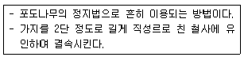
- 울타리형 정지
- 변칙주간형 정지
- 원추형 정지
- 배상형 정지
(정답률: 73%)
60. 큐어링한 후 고구마의 안전저장 온도는?
- 3~5℃
- 7~11℃
- 13~15℃
- 18~24℃
(정답률: 66%)
4과목: 유기식품 가공.유통론
61. 다음 중 식품공전상 조미식품이 아닌 것은?
- 조림류
- 소스류
- 식초
- 카레(커리)
(정답률: 56%)
62. 유기가공식품에 사용하는 원재료에 대한 설명으로 틀린 것은?
- 동일 원재료에 대해서 유기농산물과 비유기농산물을 혼합한 경우에는 함량을 표기해야 한다.
- 유기가공식품의 제조ㆍ가공 및 취급과정에서 전리방사선을 사용할 수 없다.
- 유전자변형 식품 또는 식품첨가물을 사용하거나 검출되어서는 아니 된다.
- 당해 식품에 사용하는 용기ㆍ포장은 재활용이 가능하거나 생물분해성 재질이어야 한다.
(정답률: 60%)
63. 농산물의 일반적인 유통경로는?
- 중계 - 분산 - 가공
- 중계 - 분산 - 수진
- 수집 - 중계 - 분산
- 분산 - 가공 - 중계
(정답률: 78%)
64. 유기가공식품 제조공장의 관리방법이 아닌 것은?
- 공장의 해충은 기계적, 물리적, 화학적 방법으로 방제한다.
- 합성농약자재 등을 사용할 경우 유기가공식품 및 유기농산물과 직접 접촉하지 아니하여야 한다.
- 제조설비 중 식품과 직접 접촉하는 부분의 세척, 소독은 화학약품을 사용하여서는 아니 된다.
- 식품첨가물을 사용한 경우에는 식품첨가물이 제조설비에 잔존하여서는 아니 된다.
(정답률: 78%)
65. 마케팅 믹스의 구성요소가 아닌 것은?
- 상품전략
- 가격전략
- 유통전략
- 수송전략
(정답률: 81%)
66. 저온 저장 중에 일어나는 식품의 품질변화 중 화학적 변화와 거리가 먼 것은?
- 지질의 변화
- 비타민의 감소
- 색과 향미의 변화
- 수분의 감소
(정답률: 68%)
67. 다음 중 HACCP의 7가지 원칙에 해당되지 않는 것은?
- 위해요소분석
- 검증절차 및 방법 수립
- 제품의 특징 기술
- 개선조치방법 수립
(정답률: 74%)
68. 식물성 자연독 성분을 함유한 식품이 잘못 연결된 것은?
- gossypol - 정제가 불충분한 목화씨 기름
- solanine - 감자
- cicutoxin - 독미나리
- lycorin - 미국 자리공
(정답률: 63%)
69. 조리과정 중 생성되는 건강장해 물질은 다음 중 무엇에 속하는갸?
- 내인성
- 수인성
- 외인성
- 유인성
(정답률: 53%)
70. 진공포장방법에 대한 설명 중 틀린 것은?
- 쇠고기 등을 진공포장하면 변색작용을 촉진하게 된다.
- 호흡작용이 왕성한 신선 농산물의 장기유통용으로는 적합하지 않다.
- 가스 및 수증기 투과도가 높은 셀로판, EVA, PE등이 이용된다.
- 포장지 내부의 공기제거로 박피 청과물의 갈변작용이 억제된다.
(정답률: 65%)
71. 제품수명주기(product life cycle) 4단계 중 대량생산과 극심한 경쟁으로 인해 가격인하, 품질향상, 판매촉진비용의 증가가 필요한 단계는?
- 도입기
- 성장기
- 성숙기
- 쇠퇴기
(정답률: 70%)
72. 유기가공식품에서 식품 표면의 세척, 소독제로서 가공보조제로만 사용이 가능한 것은?
- 과산화수소
- 수산화나트륨
- 무수아황산
- 구연산
(정답률: 62%)
73. 필름표면에 계면활성제를 처리하여 첨가제 분산에 의한 필름의 장력을 증가시켜 결로현상이 일어나지 않게 하는 기능성 포장재는?
- 항균필름
- 방담필름
- 미제공필름
- 키토산필름
(정답률: 77%)
74. 한외여과에 대한 설명으로 틀린 것은?
- 고분자 물질로 만들어진 막의 미세한 공극을 이용한다.
- 물과 같이 분자량이 작은 물질은 막을 통과하나 분자량이 큰 고분자 물질의 경우 통과하지 못한다.
- 단백질 농축, 전분 및 당류의 분리, 치즈제조에 사용된다.
- 삼투압보다 높은 압력을 용액 중에 작용시켜 용매가 반투막을 통과하게 한다.
(정답률: 63%)
75. 세균성 식중독의 예방법으로 바람직하지 않은 것은?
- 식품과 접촉하는 도구는 세척과 소독을 철저히 한다.
- 식품의 종류, 가역 전후 등에 따라 분리 보관한다.
- 저온저장하여 균의 증식을 최대한 억제한다.
- 2차 감염을 철저하게 예방하기 위해 예방접종을 한다.
(정답률: 70%)
76. 100℃에서 D값이 2분인 미생물을 100℃에서 10분간 처리한 후 미생물 수를 측정한 결과 생존균수는 102이었다. 같은 온도에서 6분 처리할 경우 예상되는 생존균수는?
- 102
- 103
- 104
- 105
(정답률: 52%)
77. 수입 산분해 간장에 들어 있던 것으로 보고되어 논란이 있었던 내분비계 장애 물질(일명 환경호르몬)은?
- Ergocalciferol
- Okadaic acid
- Colopidol
- Dochlorophenol
(정답률: 64%)
78. 유기가공식품의 가공에 대한 설명으로 틀린 것은?
- 유기가공식품의 순수성은 전체 가공과정에서 철저히 유지되어야 한다.
- 식품 또는 가공보조제별로 가공보조제의 사용조건을 제한한다.
- 미생물 및 효소제제 중 유전자변형 미생물 및 효소제제는 제외한다.
- 유기사료 또는 유기농 사료는 유기농축산물로 표시한다.
(정답률: 65%)
79. 수박 한통의 유통단계별 가격은 농가판매가격 5000원, 위탁상가격 6000원, 도매가격 6500원, 그리고 소비자가격은 8500원이라 한다면, 수박 한통의 유통마진(Marketion Margin)은 얼마인가?
- 1000원
- 1500원
- 2000원
- 3500원
(정답률: 78%)
80. 대류에 의하여 빠르게 가열되는 통조림 식품은?
- 딸기 잼
- 사과 주스
- 쇠고기 스프
- 옥수수 크림
(정답률: 54%)
5과목: 유기농업관련 규정
81. 수입 유기식품의 신고에 관한 내용이다. ()에 알맞은 내용은?
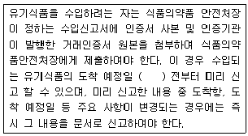
- 15일
- 10일
- 7일
- 5일
(정답률: 53%)
82. 인증사업자의 준수사항에서 인증사업자는 매년 몇 월 며칠까지 서식에 따라 전년도 인증품의 생산 제조ㆍ가공 또는 취급 실적을 해당 인증기관의 장에게 제출하거나 친환경 인증관리 정보시스템에 등록하여야 하는가?
- 1월 20일
- 1월 30일
- 2월 10일
- 2월 15일
(정답률: 56%)
83. 인증심사원에 관한 내용 중 거짓이나 그 밖의 부정한 방법으로 인증심사 업무를 수행한 경우 인증심사원이 받는 처벌은?
- 자격 취소
- 3개월 이내의 자격 정지
- 12개월 이내의 자격 정지
- 24개월 이내의 자격 정지
(정답률: 71%)
84. 과태료의 부과기준에 관한 내용 중 과태료를 체납하고 있는 위반행위자의 경우를 제외하고 위반행위가 사소한 부주의나 오류로 인한 것으로 인정되는 경우 부과권자는 과태료를 어느 정도의 범위 내에서 줄일 수 있는가?
- 5분의 1
- 2분의 1
- 7분의 1
- 4분의 1
(정답률: 59%)
85. 유기식품등의 인증을 받은 사업자가 인증받은 내용을 변경할 때에는 그 인증을 한 해양수산부장관 또는 인증기관으로부터 농림축산식품부령 또는 해양수산부령으로 정하는 바에 따라 인증 변경승인을 받아야 한다. 이를 위반하여 해당 인증기관의 장으로서 승인을 받지 않고 인증받은 내용을 변경한 자 중 2회 위반한 자의 과태료는?
- 50만원
- 100만원
- 200만원
- 300만원
(정답률: 44%)
86. 농림축산식품부장관은 관계 중앙행정기관의 장과 협의하여 몇 년 마다 친환경농어업 발전을 위한 친환경농업 육성계획 또는 친환경어업 육성계획을 세워야 하는가?
- 3년
- 5년
- 7년
- 9년
(정답률: 79%)
87. 유기식품등의 유기표시 기준에서 유기표시 도형의 작도법에 관한 설명으로 틀린 것은?
- 표시 도형의 가로의 길이(사각형의 왼쪽 끝과 오른쪽 끝의 폭 : W)를 기준으로 세로의 길이는 0.95×W의 비율로 한다.
- 표시 도형의 흰색 모양과 바깥 테두리(좌ㆍ우 및 상단부 부분에만 해당한다.)의 간격은 0.1×Wㅎ로 한다.
- 표시 도형의 흰색 모양 하단부 좌측 태극의 시작점은 상단부에서 0.55×W 아래가 되는 지점으로 한다.
- 표시 도형의 흰색 모양 하단부 우측 태극의 끝점은 상단부에서 0.55×W 아래가 되는 지점으로 한다.
(정답률: 52%)
88. 친환경농어업 육성 및 유기식품 등의 관리ㆍ지원에 관한 법률상 “허용물질”의 신규 선정, 개정 또는 폐지 절차에 관한 내용이다. ()에 알맞은 내용은?
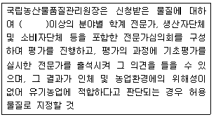
- 3명
- 5명
- 7명
- 9명
(정답률: 57%)
89. 병해충 관리를 위하여 사용이 가능한 물질 중 사용가능 조건이 “달팽이 관리용으로만 사용할 것”에 해당하는 것은?
- 과망간산칼륨
- 황
- 맥반석
- 인산철
(정답률: 63%)
90. 유기농축산물을 생산, 제조ㆍ가공 또는 취급하는 과정에서 사용할 수 있는 허용물질을 원료 또는 재료로 하여 만든 제품을 무엇이라 하는가?
- 친환경농업
- 유기식품등
- 유기농업자재
- 친환경농축산물
(정답률: 65%)
91. 위반행위의 획수에 따른 과태료의 가중된 부과기준은 최근 얼마 간 같은 위반행위로 과태료부과처분을 받은 경우에 적용하는가? (단, 이 경우 기간의 계산은 위반행위에 대하여 과태료 부과처분을 받은 날과 그 처분 후 다시 같은 위반행위를 하여 적발된 날을 기준으로 한다.)
- 3개월
- 6개월
- 1년
- 2년
(정답률: 56%)
92. 유기농축산물의 함량에 따른 표시기준에서 특정 원재료로 유기농축산물을 사용한 제품에 관한 내용으로 틀린 것은?
- 특정 원재료로 유기농축산물만을 사용한 제품이어야 한다.
- 표시장소는 원재료명 및 함량 표시란에만 표시할 수 있다.
- 해당 원재료명의 일부로 “유기”라는 용어를 표시할 수 없다.
- 원재료명 및 함량 표시란에 유기농축산물의 총함량 또는 원료별 함량을 백분율(%)로 표시하여야 한다.
(정답률: 70%)
93. 유기식품등의 인증심사 절차 등에 관한 내용이다. ()에 앚맞은 내용은?
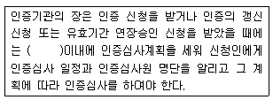
- 3일
- 5일
- 10일
- 15일
(정답률: 58%)
94. 인증기관의 지정취소 등에 관한 내용 중 정당한 사유 없이 1년 이상 계속하여 인증을 하지 아니한 경우 인증기관이 받는 처벌은?
- 지정 취소
- 3개월 이내의 업무 일부 정지
- 3개월 이내의 업무 전부 정지
- 12개월 이내의 업무 일부 정지
(정답률: 65%)
95. 인증기관의 지정내용 변경신고 등에서 인증기관의장은 지정받은 내용 중 인증기관 명치으 인력 및 대표자가 변경된 경우에 변경된 날부터 몇 개월 이내에 인증기관 지정내용 변경신고서에 지정내용이 변경되었음을 증명할 수 있는 서류를 첨부하여 국립농산물품질관리원장에게 제출하여야 하는가?
- 6개월
- 3개월
- 2개월
- 1개월
(정답률: 54%)
96. 유기식품등의 표시 등에 관한 사항이다. ()안에 알맞은 내용은?
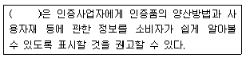
- 식품의약품안전처장
- 농림축산식품부장관
- 농업기술센터장
- 농촌진흥청장
(정답률: 68%)
97. 인증취소 등 행정처분의 기준 및 절차에서 인증신청서, 첨부서류, 인증심사에 필요한 서류를 거짓으로 작성하여 인증을 받을 경우 1차 행정처분은?
- 시정명령
- 해당 인증품의 인증 표시제거
- 인증취소
- 해당 인증품의 회수ㆍ폐기
(정답률: 63%)
98. 유기식품등의 인증 신청 및 심사 등에 따른 인증의 유효기간은 인증을 받은 날부터 몇 년으로 하는가?
- 5년
- 3년
- 4년
- 1년
(정답률: 69%)
99. 다음 내용에 해당하는 것은?
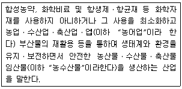
- 친환경농수산물
- 유기
- 비식용유기가공품
- 친환경농어업
(정답률: 62%)
100. 유기식품등의 인증기준 등에서 유기농산물 및 유기임산물의 재배 포장, 용수, 종자에 관한 구비 요건 내용이다. ( )에 알맞은 내용은?
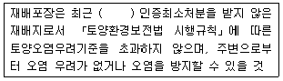
- 3개월간
- 6개월간
- 1년간
- 2년간
(정답률: 66%)
식질토는 유기물이 많아 토양의 흙먼지를 끌어들이는 효과가 있어 토양 입단 조성에 도움을 줄 수 있지만, 토양 통기를 촉진하는 효과는 없습니다. 따라서, "식질토를 이용한 객토"는 토양 통기의 촉진책으로 틀린 것입니다.